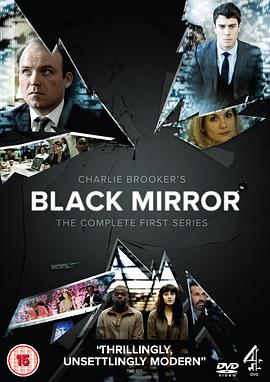

黑镜 第一季 / Black Mirror Season 1
又名：黑镜子 第一季
作品信息
| 导演 | 奥托·巴瑟斯特 / 尤洛斯·林 / 布莱恩·威尔许 |
| 编剧 | 查理·布鲁克 / 杰西·阿姆斯特朗 / Kanak Huq |
| 主演 | 罗里·金尼尔 / 鲁伯特·艾弗雷特 / 丹尼尔·卡卢亚 / 托比·凯贝尔 / 杰西卡·布朗·芬德利 / 艾伦·里奇 / 保罗·帕波维尔 / 汤姆·库伦 |
| 类型 | 剧情 / 科幻 / 惊悚 |
| 制片国家/地区 | 英国 |
| 语言 | 英语 |
| 首播 | 2011-12-04(英国) |
| 季数 | 1 |
| 集数 | 3 |
| 单集片长 | 52分钟 |
| IMDb | tt2085059 |
最后一次看到是 2026-08-12T21:12:35+08:00 · 豆瓣原页